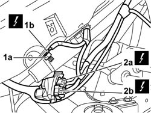
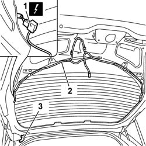
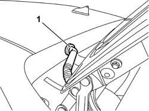

5505B54 TAIL-GATE WIRING - R R
- Path
- Procedures > 55 ELECTRICAL EQUIPMENT > 5505 INSTRUMENT/GUAGE ELECTRICAL WIRING > 5505B DOOR,BOOT AND BONNET WIRING. > 5505B54 TAIL-GATE WIRING - R R
- Kind
- repair procedure (removal / refitting; the operation number is the code)
- Applies to
- all engines; all production periods
- Interactive page
- https://sloeber94.github.io/elrnDB-aGt/en/#/125001591
Applies to: all engines; all production periods
 Removing
Removing
 Refitting
Refitting1. Undo the nut (1a) and disconnect the earth lead (1b).
Name | Connector | |
|---|---|---|
1b | Heated rear window earth | See C32 REARSCREEN EARTH |
2. Disconnect the electrical connection (2a) and the electrical connection (2b).
Name | Connector | |
|---|---|---|
2a | Rear/tail-gate junction | See D85A REAR/TAIL-GATE JUNCTION ( CONNECTORS ) |
Name | Connector | |
|---|---|---|
2b | Rear/tail-gate junction | See D85B REAR/TAIL-GATE JUNCTION ( CONNECTORS ) |

Applies to: all engines; all production periods
1. Disconnect the electrical connections for the heated rear windscreen (left and right sides).
Name | Connector | |
|---|---|---|
1 | Heated rear windscreen | See P55A HEATED REAR WINDSCREEN ( CONNECTORS ) |
Name | Connector | |
|---|---|---|
1 | Heated rear windscreen | See P55B HEATED REAR WINDSCREEN ( CONNECTORS ) |
2. Release the wiring from the retaining springs.
3. Pass the wiring through the wiring duct.

Applies to: all engines; all production periods
1. Extract the wiring via the rubber cable ducts.

Applies to: all engines; all production periods
Refitting
RemovingPosition the wiring passing it through the rubber cable duct.
Secure the wiring to the tailgate using the retaining clips.
Connect the heated rear window electrical connections.
Name | Connector | |
|---|---|---|
- | Heated rear windscreen | See P55A HEATED REAR WINDSCREEN ( CONNECTORS ) |
Name | Connector | |
|---|---|---|
- | Heated rear windscreen | See P55B HEATED REAR WINDSCREEN ( CONNECTORS ) |
Connect the electrical connections to the left rear pillar.
Name | Connector | |
|---|---|---|
- | Rear/tail-gate junction | See D85A REAR/TAIL-GATE JUNCTION ( CONNECTORS ) |
Name | Connector | |
|---|---|---|
- | Rear/tail-gate junction | See D85B REAR/TAIL-GATE JUNCTION ( CONNECTORS ) |
Connect the earth lead and secure it using the nut.
Name | Connector | |
|---|---|---|
- | Heated rear window earth | See C32 REARSCREEN EARTH |